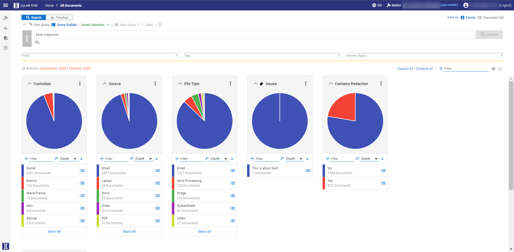

Once data has been uploaded into your matter, you can begin the review process. Most of the time, this process begins with an initial analysis
of the information. This aids your relevancy review and narrows the scope of sensitive or
Facets are a visualization of the collected data that allow you to quickly and easily analyze data that is most relevant or may not be relevant to the public records request. Think of each Facet as a sub-set of your data sorted into buckets or folders.
A Facet can be based on:
As a result, you can quickly browse your data by Custodian or File Type, get instant access to potentially sensitive information such as PII, or have insight into all the email domains contained within the data set.
Having this information readily available, allows you to make immediate decisions on what may need to be redacted or what may need to be exempt from disclosure.
On the Matter Home Page, select Browse.

Watch this video to learn more about Facets:
|
|
Tip: Use the Expand All/Collapse All and Filter features to easily navigate Facets.
|